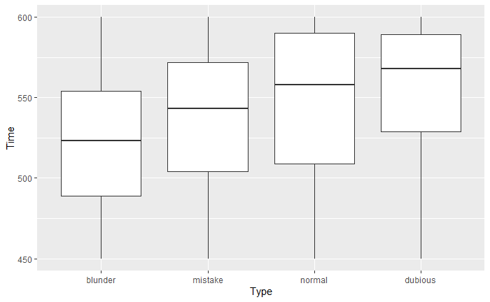
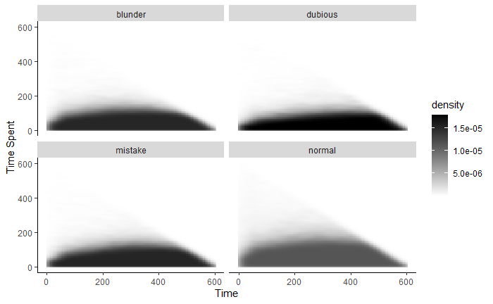
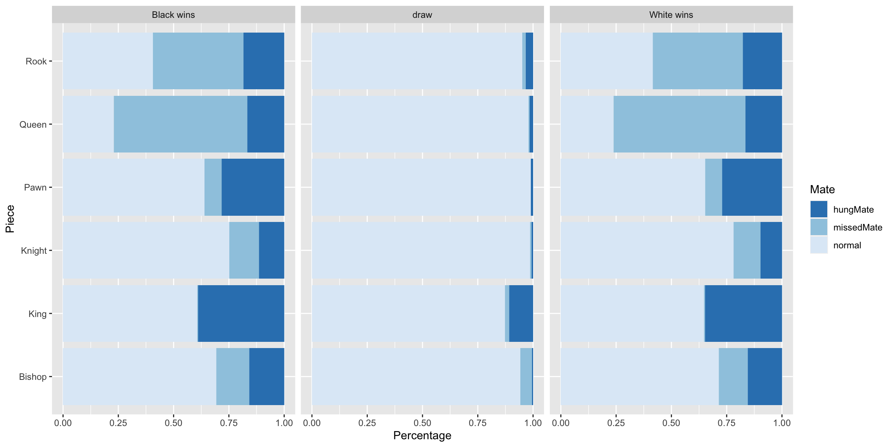
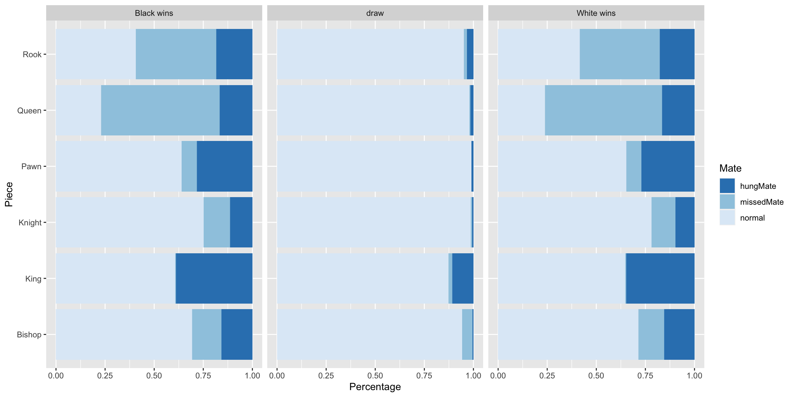

Chapter 5 Results
5.1 Time and Moves
How does time and the quality of moves correlate?
We can first start by considering the simple case.
5.1.1 Time amd Time Spent by Move Type
The distribution of Time and Time Spent by the type of moves people make.


This graph provides a very unique insight to the correlation.
5.1.1.1 Time
For Time:
Normal moves have the biggest std as expected.
People have less Time Left after they make a blunder or mistake
Dubious moves are mostly made in the first 40 second of the game.
- This may imply that dubious moves are part of the opening.
When the time left reaches 5 minutes and 1 minutes, sudden fluctuations were found for the count of moves
It is believed that 10 seconds, 1 minute and 5 minutes acted as a psychological catalyst that urged players to make a move
For both fluctuations at 5mins and 1min, we can see the curves for normal moves peak earlier than the other type of moves and the other moves almost peaked at the same time. However, dubious moves happened the most when there are 5 minutes left while mistake moves happened the most when there is only 1 minute left.
When the time left is less than 10 seconds, the distribution of the moves changed. Normal moves are made the most.
5.1.1.2 Time Spent
For Time Spent:
Normal moves are made fast.
Normal moves may be obvious given the position
Normal moves may be automatically played during the opening.
Blunder takes more average time than any other type of move.
- This is less obvious. We think blunders are made fast without thought.
Mistakes also take more time than normal moves.
This is a heatmap of Time Left - Time Spent per type of move.

It becomes evident that people play bad moves early in the game
5.1.2 Time ratio by Move
Let’s define ratio = Time Spent / Time.
This concept of ratio is helpful in the sense that the person could have spent more time considering the position.
For instance, given 1 second of time left and the player makes a move in 1 second, then there is less possibility that the player would have detected a better move.
However, given 60 second of time left and the player makes a move in 1 second and blunder, this is a bad decision and probably the player should have thought more before they made the move.
## X Type mean std
## 1 1 dubious 0.1424937 0.1303141
## 2 2 mistake 0.1668489 0.1409064
## 3 3 blunder 0.1771698 0.1542783
## 4 4 normal 0.2248049 0.1818782
From this graph,
The mean of normal moves are much higher than other moves.
- Normal moves are a result of higher ratio of Time Spent / Time.
Dubious moves are most likely intended or result of bad understanding early on in the game.
Mistakes and blunders are also a result of not enough thinking.
- Players could have spent much more time thinking about the position and not blundering.
5.1.3 Quality of move during low time
Players have to make decisions in a short period of time and the quality of decision is related to time. Using Time ratio is one of the ways to study the relationship. Thanks to the computer evaluation made to each moves, we can use the Eval and EvalDiff from the dataset to quantify quality of move and the difference in quality of each pair of moves.
The result of this section would give insight to players that what piece would have better odds of having a higher evaluation under low time. Here’s the summary of the statistics:
## X X...EvalDiff X.....Eval
## 1 NA Min. :-150.92000 Min. :-152.6500
## 2 NA 1st Qu.: -0.31000 1st Qu.: -2.0000
## 3 NA Median : 0.00000 Median : 0.1400
## 4 NA Mean : 0.00394 Mean : 0.3011
## 5 NA 3rd Qu.: 0.31000 3rd Qu.: 2.8400
## 6 NA Max. : 150.47000 Max. : 152.6500
To represent low time with Time ratio, a specific range was chosen [0,0.0025] since we found that from 5.1.2 and the above graph that the majority of Time ratio is from 0.0015 to 0.01. Thus, one-forth of 0.01 was used to represent low time.
Within the time ratio of 0.0025, it is found that Evaluation difference increases as the time ratio decrease further for most pieces except rook. Which means the advantage of moving a piece in a lower time ratio would be better.
Comparing the six pieces, Pawn has the highest odds of being a high quality move, followed by Bishop and Knight
Thus, when the player has to make a quick decision with very less time left, Pawn and Bishop should take piority.
However, it is noticed that when time ratio decreases to 0.00165, the evaluation difference almost reduced to zero. Thus, it is not recommended to make a move with a very low Time ratio.
5.1.3.1 Quality of moves by piece when remaining time is low
Taking the perspective of Time left, it is different from the Time ratio graph. There is no significant increase in EvalDiff as the time left is reducing from 60 seconds. However, we could still find out moving which piece would yeild the highest possibility of a better evaluation.
King has the highest Evaluation, followed by Rook and Pawn. Bishop and Knight should be avoided to be used when remaining time is low as they have the lowest Evaluation difference.
5.1.3.2 Quality of moves by piece when time spent is low
- It is found that the lowest time spent on a move would be around 0.6 seconds. Again, unlike the time ratio graph, the span of Evaluation difference stays the same . However, in contrast to the previous graph, Pawn is statistically the best pick for move if the player wants to make a quick response, followed by King. Queen should be avoid to use when a quick response is needed as the Evaluation difference is the smallest.
5.2 Investigating how the games ended
Most of the games end normally with results of either one of the players win or the match is tied. However, we see that over 10% of the games ended with someone ran out of time.
From this graph,
The majority of matches ended within 25 moves, however, matches that end with one player ran out of time were mostly happening at 35 moves.
Number of matches ended with the reason of rules infraction is neglectable.
2D density graph for time left vs time spent for the last move From this graph,
Most Time ratio lies between 0.1 and 0.01 when it is the last move.
We can see the most densed area of graph happens when time left is less than 25 and time spent is less than 1.25. That shows when it comes to the last move, the time left is no more than 25 seconds and the time spent is no more than 1.25 seconds.
Moreover, there is another peak occurs when remaining time is around 225 seconds. That tells a large number of games ended during that amount of Time left
Another way to see it, majority of the games end around Time ratio = 0.1 and 0.01
5.2.1 Use of pieces at the end game
 

The majority of non draw games ended with Queen being the last piece to move, followed by Rook. However, in draw games, King and Queen are most frequently used pieces for the last move.
Taking the different kinds of mate into factor and faceting the data by the result, we can see that Black and White side has extremely close distribution for the three types of Mate when it comes to wnning. Knight is the most used piece for a normal mate, followed by Bishop and Pawn. However, if it is a missed mate, Queen would be the most used piece. King would be the most used piece when it is a hung mate.
In games that had results of Draw, the distribution is different with King being the most used one if it is a hung mate.
Please note that Time ratio is scaled-up from 0 to 1 to 0 to 100%:
This graph plots with the four most frequently used pieces for winning move. The relationship between Time ratio and Move number gave some extra insights to the use of peices at the end game
As expected, King has the widest span on the Move number axis and has the lowest Time ratio. Long span on the Move number shows that King tends to survive longer as King is the most valuable piece which determines the winner of the game so any move made to it should be thoughtful and careful, thus, a lower time ratio.
With Queen, Rook, and Bishop not being that decisive to the outcome of the game compared to King, we can see all of them has a lower span on the Move number axis.
5.2.2 Time left and time ratio when the losers ran out of time
Please note that Time ratio is scaled-up from 0 to 1 to 0 to 100%:
It could be seen that the majority of players who won because their opponent ran out of time had suffucient time left. Most of them had more than 30 seconds left.
Considering time forfeit games only, time ratio of the winner are mostly below 10% while the density plot shows it concentrated at Time ratio = 0.02 and Move Number = 30.
Also, we can observe that there are less outliers for time ratio when the move number is very high. It is believed that games that have a hugh amount of moves would result in smaller time ratio as there is not much time left.